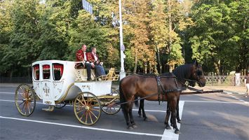
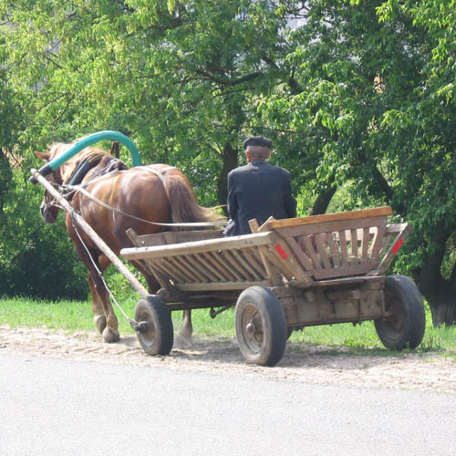

гужевое транспортное средство — транспортное средство, приводимое в движение мускульной силой животного (животных);
В туристических местах часто предлагают поездки на карете, запряженной лошадьми.

Карета, запряженная лошадьми.
Фото БЕЛТА с сайта belta.by.
В некоторых небольших населенных пунктах, особенно деревнях, можно встретить телеги, запряженные лошадьми.

Телега, запряженная лошадью.
Фото с сайта vorobiov.com.
В Беларуси, пожалуй, используется только мускульная сила лошадей, в других странах это могут быть, например, ездовые собаки, волы, олени.
Заметим, что карета, телега, сани - являются гужевым транспортным средством, в то время как всадник не является гужевым транспортным средством.